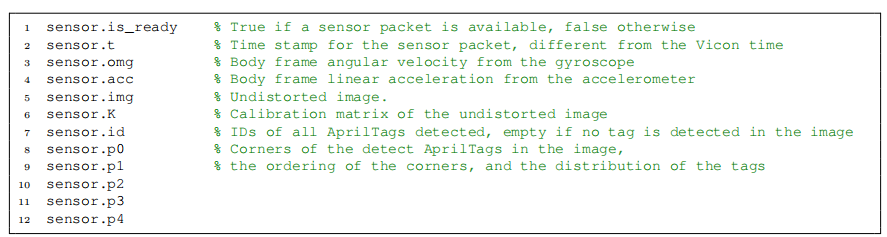
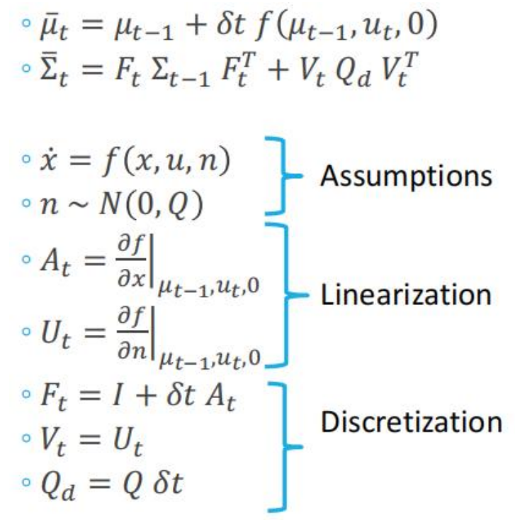
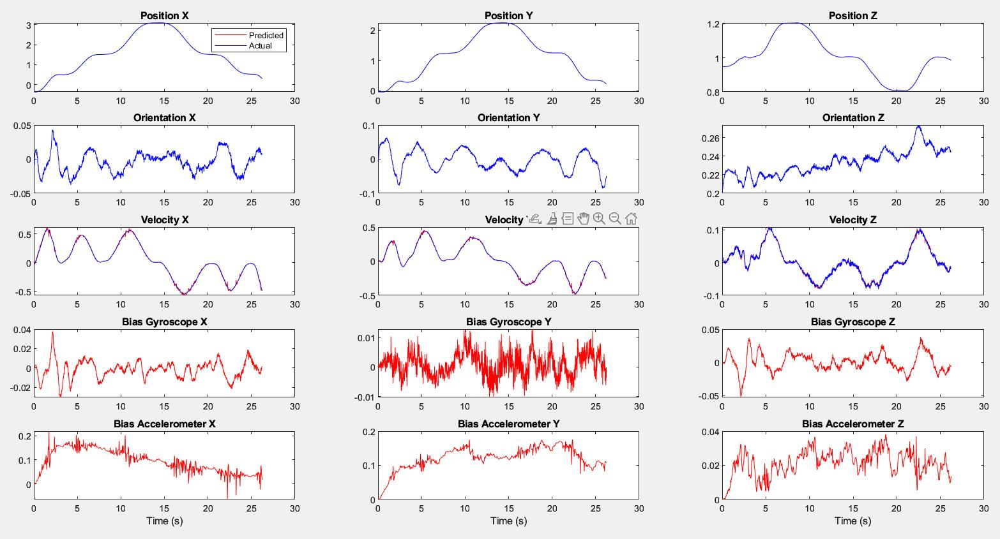

In this project I use a Extended Kalman Filter to Localize a quadrotor. I use the body frame acceleration and angular velocity from the onboard IMU as your control inputs. The measurement will be given by the pose or velocity from the Vicon. Vicon data is in the following format: \[ [x, y, z, roll, pitch, yaw, v_x, v_y, v_z, \omega_x, \omega_y, \omega_z]^T \]
The on board processor of the robot collects synchronized camera and IMU data and sends them to the mission computer. At this stage, the camera data should not be used. The sensor data is decoded into standard MATLAB format. Note that since the sensor data is transmitted via wireless network, there may or may not be a sensor packet available during a specific iteration of the control loop. A sensor packet is a struct that contains following fields:

The goal is to use an Extended Kalman Filter (EKF) to estimate the position, velocity, and orientation, and sensor biases of an Micro Aerial Vehicle. The Vicon velocity is given in the world frame, whereas the angular rate in the body frame of the robot. Furthermore, I use the body frame acceleration and angular velocity from the on board IMU as the inputs.
I have implemented 2 versions of the filter. In the first one, the measurement update is given by the position and orientation from vicon, in the second one I use only the velocity from the Vicon.. In both parts, the process model is the same.
Assumptions
We make the assumption that the noise in the readings obtained from the IMU and Vicon adhere to a normal distribution. Additionally, we can assume the state derivative to be both continuous and differentiable, allowing us to linearize it. Based on these assumptions, we can utilize the EKF algorithm for predicting the state.
The Process Model:
The state \(\mathbf{X}\) is given by \[\mathbf{X} = \begin{bmatrix} \mathbf{x_1} \\ \mathbf{x_2} \\ \mathbf{x_3} \\ \mathbf{x_4} \\ \mathbf{x_5} \end{bmatrix} = \begin{bmatrix} \mathbf{p} \\ \mathbf{q} \\ \mathbf{\dot{p}} \\ \mathbf{b_g} \\ \mathbf{b_a} \end{bmatrix} = \begin{bmatrix} \mathbf{position} \\ \mathbf{orientation} \\ \mathbf{linear \, velocity} \\ \mathbf{gyroscope \, bias} \\ \mathbf{accelerometer \, bias} \end{bmatrix} \]
Here \(\mathbf{X} \in \mathbf{R}^{15}\) and \(\mathbf{q} = [\phi, \theta, \psi] ^T = [roll, pitch, yaw]^T\).
Using the properties of the distributions we can derive the state transition equations.
We already have \(\dot{\mathbf{p}}\) in the state vector. We can calculate \(\dot{\mathbf{q}}\) using the angular velocity measured by IMU \((\omega_m)\) which is expressed in body frame. Since the gyroscope noise is additive white noise \(n_g \sim \mathit{N}(0,\mathit{Q})\). \[ \omega_m = \omega + b_g + n_g \] \[ \omega = \omega_m - b_g - n_g \] \(G(q)\) is a transformation that maps the euler angle derivatives \((\dot{q} = [\dot{\phi}, \dot{\theta}, \dot{\psi}]^T)\) to angular velocity expressed in world frame. Where \(G(\mathbf{q})^{-1}\) maps orientation to angular velocity and is given by. See eqn 2.76 here \[ G(\mathbf{q})^{-1} = \begin{bmatrix} \frac{\cos(z)\sin(y)}{\cos(y)} & \frac{\sin(z)\sin(y)}{\cos(y)} & 1\\ -\sin(z) & \cos(z) & 0\\ \frac{\cos(z)}{\cos(y)} & \frac{\sin(z)}{\cos(y)} & 0 \end{bmatrix} \] \[ (\omega)_{world} = G(q) \dot{q} \] Since \(\omega\) is expressed in the body frame it need to be rotated to be expressed with respect to the world using \(R^w_b\). \[R^w_b \omega = G(q) \dot{q}\]
Hence finally we get the euler angle derivatives to be \[\dot{q} = G(q)^{-1}R_b^w \omega\] \[\dot{q} = G(q)^{-1}R_b^w(\omega_m - b_g - n_g) \]
Similarly for acceleration, since we have additive accelerometer noise. \(n_a \sim \mathit{N}(0,\mathit{Q})\) The measured acceleration is given by. \[a_m = R_b^w(\ddot{p} - g) + b_a + n_a \]
and let \(\dot{b_g} = n_{bg}\) and \(\dot{b_a} = n_{ba}\) be gyroscope noise and accelerometer white noise respectively.
Differentiating we get the state transition equation as \[ \mathbf{\dot{X}}= \begin{bmatrix} \mathbf{\dot{p}} \\ \mathbf{\dot{q}} \\ \mathbf{\ddot{p }} \\ \mathbf{\dot{b_g}} \\ \mathbf{\dot{b_a}} \end{bmatrix} = \begin{bmatrix} \mathbf{x_3} \\ G(\mathbf{q})^{-1}R_b^w (\mathbf{\omega_m} - \mathbf{b_g} - \mathbf{n_g})\\ \mathbf{g}+R_b^w(\mathbf{a_m}-\mathbf{b_a}-\mathbf{n_a}) \\ \mathbf{n_{bg}} \\ \mathbf{n_{ba}} \end{bmatrix} = f(\mathbf{X}, \mathbf{u}, \mathbf{n}) \]
Prediction Step:

We use MATLAB symbolic library to determine \(A_t\) and \(U_t\). \(Q_d\) is the covariance of the IMU noise. In the prediction stage, the filter uses the system model to make a prediction of the next state of the system based on the current state and any control inputs from the IMU
Update Step:
The prediction is used to estimate the measurement that will be obtained at the next time step. During the correction stage, the filter incorporates both the predicted measurement and the actual measurement taken at the following time step to refine its assessment of the system’s state. The refined estimate is a weighted sum of the predicted state and the actual measurement, with the filter’s assessment of the uncertainty in both the model and the measurements used to determine the weighting of each component using the Kalman Gain.
Here the observation model \(\mathbf{z}\) is given by \[ \mathbf{z}= \begin{bmatrix} \mathbf{p} \\ \mathbf{q} \\ \mathbf{r} \end{bmatrix} + \mathbf{v} = \mathbf{C_t X}+\mathbf{v} \]
Where \(C_t\) is a selection matrix. For case 1 we select position and orientation \[ C_t = \begin{bmatrix} I & 0 & 0 & 0 & 0 & 0\\ 0 & I & 0 & 0 & 0 & 0 \end{bmatrix} \]
For case 2 we select Linear velocitiy \[ C_t = \begin{bmatrix} 0 & 0 & I & 0 & 0 & 0 \end{bmatrix} \]
Results
I have compared both implementations of the Extended Kalman filter on 3 datasets. 3 being the most agressive flight.
Case 1 Dataset 1
Case 1 Dataset 2
Case 1 Dataset 3

Case 2 Dataset 1
Case 2 Dataset 2
Case 2 Dataset 3
The results show that the yaw estimate of the quadrotor drifts if we use only velocity measurements to update the EKF. Measuring pose gives us better tracking performance.